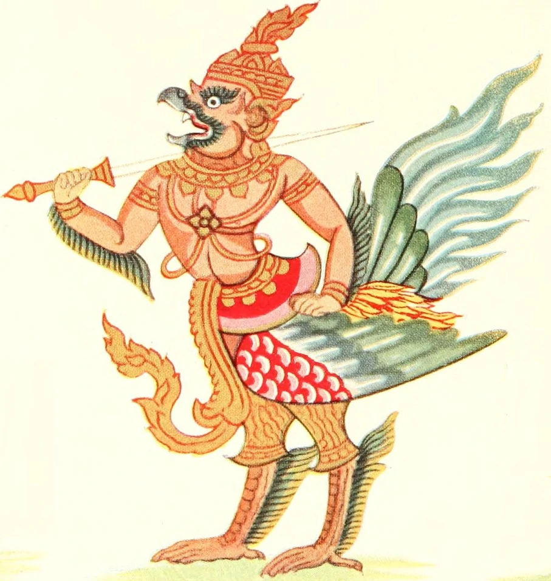

The Garuda is a large legendary bird, bird-like creature, or humanoid bird that appears in both Hindu and Buddhist mythology. Garuda is the mount (vahana) of the Lord Vishnu. Garuda is the Hindu name for the constellation Aquila. The brahminy kite and phoenix are considered to be the contemporary representations of Garuda. Indonesia adopts a more stylistic approach to the Garuda's depiction as its national symbol, where it depicts a Javanese eagle (being much larger than a kite).

In Hinduism, Garuda is a Hindu divinity, usually the mount (vahana) of the Lord Vishnu. Garuda is depicted as having the golden body of a strong man with a white face, red wings, and an eagle's beak and with a crown on his head. This ancient deity was said to be massive, large enough to block out the sun. Garuda is known as the eternal sworn enemy of the Nāga serpent race and known for feeding exclusively on snakes, such behavior may have referred to the actual short-toed eagle of India. The image of Garuda is often used as the charm or amulet to protect the bearer from snake attack and its poison, since the king of birds is an implacable enemy and "devourer of serpent". Garudi Vidya is the mantra against snake poison to remove all kinds of evil. His stature in Hindu religion can be gauged by the fact that a dependent Upanishad, the Garudopanishad, and a Purana, the Garuda Purana, is devoted to him. Various names have been attributed to Garuda - Chirada, Gaganeshvara, Kamayusha, Kashyapi, Khageshvara, Nagantaka, Sitanana, Sudhahara, Suparna, Tarkshya, Vainateya, Vishnuratha and others. The Vedas provide the earliest reference of Garuda, though by the name of Śyena, where this mighty bird is said to have brought nectar to earth from heaven. The Puranas, which came into existence much later, mention Garuda as doing the same thing, which indicates that Śyena (Sanskrit for eagle) and Garuda are the same. One of the faces of Śrī Pañcamukha Hanuman is Mahavira Garuda. This face points towards the west. Worship of Garuda is believed to remove the effects of poisons from one's body. In Tamil Vaishnavism Garuda and Hanuman are known as "Periya Thiruvadi" and "Siriya Thiruvadi" respectively. In the Bhagavad-Gita (Ch.10, Verse 30), in the middle of the battlefield "Kurukshetra", Krishna explaining his omnipresence, says - " as son of Vinata, I am in the form of Garuda, the king of the bird community (Garuda)" indicating the importance of Garuda. Garuda wears the serpent Adisesha on his left wrist and the serpent Gulika on his right wrist. The serpent Vasuki forms his sacred thread. The cobra Takshaka forms his belt on his hip. The snake Karkotaka is worn as his necklace. The snakes Padma and Mahapadma are his ear rings. The snake Shankachuda adorns his divine hair. He is flanked by his two wives ‘Rudra’ and ‘Sukeerthi’ or (Sukirthi). These are all invoked in Vedanta Desika's Garuda Panchashath and Garuda Dandaka compositions. Garuda flanked with his consorts 'Rudra' and 'Sukirthi' can be seen worshipped in an ancient Soumya Keshava temple in Bindiganavile (or Mayura puri in Sanskrit ) in Karnataka state of India. Garuda Vyuha is worshiped in Tantra for Abhichara and to protect against Abhichara. However, the interesting thing is that Garuda is the Sankarshna form of the lord who during creation primarily possesses the knowledge aspect of the lord (among Vasudeva, Sankarshana, Pradyumna and Aniruddha forms). The important point is that Garuda represents the five vayus within us : prana, apana, vyana, udana, samana through his five forms Satya, Suparna, Garuda, Tarkshya, Vihageshwara. These five vayus through yoga can be controlled through Pranayama which can lead to Kundalini awakening leading to higher levels of consciousness. Garuda plays an important role in Krishna Avatar in which Krishna and Satyabhama ride on Garuda to kill Narakasura. On another occasion, Lord Hari rides on Garuda to save the devotee elephant Gajendra. It is also said that Garuda's wings when flying will chant the Vedas. With the position of Garuda's hands and palms, he is also called 'Kai Yendhi Perumal', in Tamil. According to the Mahabharata, Garuda had six sons (Sumukha, Suvarna, Subala, Sunaama, Sunethra and Suvarchas) from whom were descended the race of birds. The members of this race were of great might and without compassion, subsisting as they did on their relatives the snakes. Vishnu was their protector. Throughout the Mahabharata, Garuda is invoked as a symbol of impetuous violent force, of speed, and of martial prowess. Powerful warriors advancing rapidly on doomed foes are likened to Garuda swooping down on a serpent. Defeated warriors are like snakes beaten down by Garuda. The field marshal Drona uses a military formation named after Garuda. Krishna even carries the image of Garuda on his banner.
In Buddhist mythology, the Garuda (Pāli: garuḷā) are enormous predatory birds with intelligence and social organization. Another name for the Garuda is suparṇa (Pāli: supaṇṇa), meaning "well-winged, having good wings". Like the Naga, they combine the characteristics of animals and divine beings, and may be considered to be among the lowest devas. The exact size of the Garuda is uncertain, but its wings are said to have a span of many miles. This may be a poetic exaggeration, but it is also said that when a Garuda's wings flap, they create hurricane-like winds that darken the sky and blow down houses. A human being is so small compared to a Garuda that a man can hide in the plumage of one without being noticed (Kākātī Jātaka, J.327). They are also capable of tearing up entire banyan trees from their roots and carrying them off. Garudas are the great golden-winged Peng birds. They also have the ability to grow large or small, and to appear and disappear at will. Their wingspan is 330 yojanas (one yojana being 8 miles long). With one flap of its wings, a Peng bird dries up the waters of the sea so that it can gobble up all the exposed dragons. With another flap of its wings, it can level the mountains by moving them into the ocean. The Garudas have kings and cities, and at least some of them have the magical power of changing into human form when they wish to have dealings with people. On some occasions Garuda kings have had romances with human women in this form. Their dwellings are in groves of the simbalī, or silk-cotton tree. The Garuda are enemies to the nāga, a race of intelligent serpent- or dragon-like beings, whom they hunt. The Garudas at one time caught the nāgas by seizing them by their heads; but the nāgas learned that by swallowing large stones, they could make themselves too heavy to be carried by the Garudas, wearing them out and killing them from exhaustion. This secret was divulged to one of the Garudas by the ascetic Karambiya, who taught him how to seize a nāga by the tail and force him to vomit up his stone (Pandara Jātaka, J.518). The Garudas were among the beings appointed by Śakra to guard Mount Sumeru and the Trāyastriṃśa heaven from the attacks of the asuras. In the Maha-samaya Sutta (Digha Nikaya 20), the Buddha is shown making temporary peace between the Nagas and the Garudas. The Sanskrit word Garuda has been borrowed and modified in the languages of several countries. In Burmese, Garudas are called galone (ဂဠုန်). In Burmese astrology, the vehicle of the Sunday planet is the galone. In the Kapampangan language of the Philippines, the native word for eagle is galura. In Japanese a Garuda is called karura . In the Qing Dynasty fiction The Story of Yue Fei (1684), Garuda sits at the head of the Buddha's throne. But when a celestial bat (an embodiment of the Aquarius constellation) flatulates during the Buddha’s expounding of the Lotus Sutra, Garuda kills her and is exiled from paradise. He is later reborn as Song Dynasty General Yue Fei. The bat is reborn as Lady Wang, wife of the traitor Prime Minister Qin Hui, and is instrumental in formulating the "Eastern Window" plot that leads to Yue's eventual political execution. It is interesting to note The Story of Yue Fei plays on the legendary animosity between Garuda and the Nagas when the celestial bird-born Yue Fei defeats a magic serpent who transforms into the unearthly spear he uses throughout his military career. Literary critic C. T. Hsia explains the reason why Qian Cai, the book's author, linked Yue with Garuda is because of the homology in their Chinese names. Yue Fei's courtesy name is Pengju (鵬舉). A Peng (鵬) is a giant mythological bird likened to the Middle Eastern Roc. Garuda's Chinese name is Great Peng, the Golden-Winged Illumination King (大鵬金翅明王). In India, Indonesia and the rest of Southeast Asia the eagle symbolism is represented by Garuda, a large mythical bird with eagle-like features that appears in both Hindu and Buddhist mythology as the vahana (vehicle) of the god Vishnu. Garuda became the national emblem of Thailand and Indonesia; Thailand's Garuda is rendered in a more traditional anthropomorphic mythical style, while that of Indonesia is rendered in heraldic style with traits similar to the real Javan hawk-eagle.